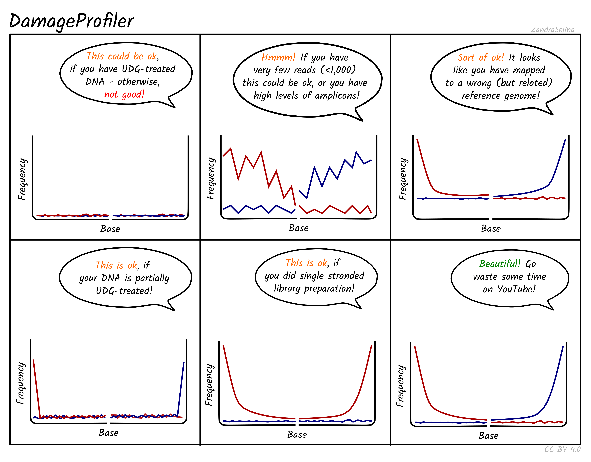

1 Introduction to nf-core/eager
The altered chemical structure and increased risk of present-day contamination of ancient DNA compared to regular genomic data requires specialized methods in both the wet and the dry lab. This includes new software written for aDNA only, evaluation of which tools are more suitable and adapted settings of established tools to be able to handle ancient genomic data. Particularly the ultra-short molecules, chemical alterations at the ends of fragments (‘ancient DNA damage’) and the likely presence of multiple genomic sources of both recent and ancient origin make standard processing steps, such as matching DNA fragments to a specific location of the reference genome a challenge. Statistics on the preservation level of endogenous DNA and reliable determination of the authenticity of the ancient molecules are another key step in the early bioinfomatic processing of ancient genomic data and have to be reliably reproducible prior to any more advanced analyses. However, the development and maintenance of such tools requires a certain level of bioinformatic experience and available computational resources.
nf-core/eager has been developed with these specific challenges in mind. As a dedicated ancient DNA pipeline, it combines standard tools as they are used in the top institutions in the field with the standardization and reproducibility of stable, containerized software and transferrable parameter choices. With the adaptability to different computing environments of Nextflow pipelines, nf-core eager provides best-practice, reproducible and accessible processing for ancient genomic data (Fellows Yates et al. 2021).
1.1 What can nf-core/eager do?
nf-core/eager streamlines the initial steps of ancient DNA analysis from FASTQ files after sequencing to processing statistics and variant calling (Figure 1.1) .
- Preprocessing:
- Sequencing quality control: FastQC (Andrews 2010)
- Sequencing artifact clean-up (merging, adapter clipping): AdapterRemoval2 (Schubert, Lindgreen, and Orlando 2016), fastp (Chen et al. 2018)
- Preprocessing statistics generation: FastQC
- Mapping:
- Alignment against reference genome: BWA aln and mem (Li and Durbin 2009; Li 2013), CircularMapper (Peltzer et al. 2016), Bowtie2 (Langmead and Salzberg 2012)
- Mapping quality filtering: SAMtools (Li et al. 2009)
- PCR duplicate removal: Picard MarkDuplicates (“Picard Toolkit” 2019), DeDup (Peltzer et al. 2016)
- Mapping statistics: SAMtools, PreSeq (Daley and Smith 2013), Qualimap2 (Okonechnikov, Conesa, and García-Alcalde 2015), bedtools (Quinlan and Hall 2010), Sex.DetERRmine (Lamnidis et al. 2018), EndorSpy (Andrades Valtueña and Fellows Yates 2020), MtNucRatio
- aDNA evaluation:
- Damage calculation: DamageProfiler (Neukamm, Peltzer, and Nieselt 2020), mapDamage2 (Jónsson et al. 2013)
- aDNA read selection: PMDtools (Skoglund et al. 2014)
- Damage removal/Base trimming: mapDamage2, Bamutils (Jun et al. 2015)
- Human nuclear contamination estimation: ANGSD (Korneliussen, Albrechtsen, and Nielsen 2014)
- Metagenomic screening: BBduk (Bushnell, n.d.), HOPS (Hübler et al. 2019), Kraken & Kraken Parse (Wood and Salzberg 2014), MALT & MaltExtract (Herbig et al. 2016)
- Variant calling: GATK UnifiedGenotyper & HaplotypeCaller (McKenna et al. 2010), sequenceTools pileupCaller (Schiffels 2024), VCF2Genome (Peltzer et al. 2016), MultiVCFAnalyzer (Bos et al. 2014), freebayes (Garrison and Marth 2012), ANGSD
- Report generation: MultiQC (P. Ewels et al. 2016)

1.2 How do I use nf-core/eager?
1.2.1 Installation
You need:
a Posix machine (HPC-cluster or a computer running Linux or MacOS)
an installation of nextflow (Di Tommaso et al. 2017)
an installation of docker or apptainer (formerly known as singularity), Conda is available as a last resort
an internet connection
Install the latest version of nf-core/eager
nextflow pull nf-core/eager
# for a specific version
nextflow pull nf-core/eager -r 2.5.3Run a test specifying your choice of docker, apptainer or Conda with -profile to enable computational configuration presets for the selected method.
nextflow run nf-core/eager -r 2.5.3 -profile test_tsv,dockerTo optimize the use of available computational resources, including HPC clusters, scheduling queues, etc., check if a Nextflow pipeline configuration is already available for your institution or computing environment. If not, you can prepare a custom profile tailored to your computational resources and setup using dedicated tutorials in the nf-core documentation. These are then also added as to the -profile flag. They are loaded in sequence, so later profiles can overwrite earlier profiles.
nextflow run nf-core/eager -r 2.5.3 -profile test_tsv,<PROFILE>1.2.2 Input preparation
You can run nf-core/eager by providing either a path to FASTQ or BAM files or a path to a tab-separated table of input data to --input. For a large number of samples and convenience, a tab-separated file (TSV) is usually the preferred option. Using a TSV input also allows for merging of different files (e.g. different libraries, different laboratory treatments, etc.) at different stages of the pipeline (Figure 1.2).

A TSV input file contains the following columns:
Sample_Name: name of the sample, all libraries with the same sample name and sequencing type will be merged after deduplication
Library_ID: name of the library
Lane: number indicating which lane the library was sequenced on, all files from the same library and sequencing type will be merged after preprocessing
Colour_Chemistry: number referring to the colour chemistry used during Illumina sequencing (e.g. 2 for NextSeq and 4 for HiSeq)
SeqType: text specifying the sequencing configuration (‘PE’ for paired-end and ’SE for single-end)
Organism: name of the organism or ‘NA’
Strandedness: library type (‘double’ or ‘single’), will affect lane/library merging and filtering
UDG_Treatment: presence of uracil DNA glycosylase treatment (‘full’, ‘half’ or ‘none’, (Rohland et al. 2015)), will affect lane/library merging, filtering and genotyping
R1: file path pointing to a forward or R1 FASTQ file (file names must be unique) for single-/paired-end data or ‘NA’ when using BAM input
R2: file path pointing to a reverse or R2 FASTQ file for paired-end data (file names must be unique) or ‘NA’ for single-end data or BAM input
BAM: file path pointing to a BAM file or ‘NA’ when using FASTQ input
A TSV file for two different mammoth samples could look like this:
Sample_Name Library_ID Lane Colour_Chemistry SeqType Organism Strandedness UDG_Treatment R1 R2 BAM
JK2782 JK2782 1 4 PE Mammoth single half https://github.com/nf-core/test-datasets/raw/eager/testdata/Mammoth/fastq/JK2782_TGGCCGATCAACGA_L008_R1_001.fastq.gz.tengrand.fq.gz https://github.com/nf-core/test-datasets/raw/eager/testdata/Mammoth/fastq/JK2782_TGGCCGATCAACGA_L008_R2_001.fastq.gz.tengrand.fq.gz NA
JK2802 JK2802 2 2 SE Mammoth double full NA NA https://github.com/nf-core/test-datasets/raw/eager/testdata/Mammoth/fastq/JK2802_AGAATAACCTACCA_L008_R1_001.fastq.gz.tengrand.bamnf-core/eager will treat the data according to the provided information, e.g. only trim UDG half data and genotype single-stranded libraries using single-stranded mode. Therefore, collecting and double-checking this information is time consuming, but crucial and enables simultaneous processing of many different samples, libraries, sequencing runs and input files!
If you realize you have different libraries from the same individual, you should enter the same Sample_Name for all respective libraries. nf-core/eager will then produce all steps for the independent libraries (e.g. endogenous DNA, sequencing quality control, contamination estimation, etc.), but merge the deduplicated BAM files before genotyping, genetic sex estimation and coverage calculation. To avoid re-mapping the whole dataset and conserve computing resources, also consider providing the mapped BAM files to nf-core/eager directly.
1.2.3 Parameter customization
By default nf-core/eager runs the following, where you only provide input data and a reference genome:
nextflow run nf-core/eager --input <INPUT>.tsv --fasta '<REFERENCE>.fasta' -profile <PROFILE>- Preprocessing:
- FastQC (sequencing quality control)
- AdapterRemoval2 (sequencing artifact clean-up)
- Mapping:
- BWA aln (alignment)
- Picard MarkDuplicates (PCR duplicate removal)
- SAMtools/PreSeq/Qualimap2/EndorSpy (mapping statistics)
- aDNA evaluation: DamageProfiler (damage assessment)
- Report generation: MultiQC (summarize all generated statistics)
The most direct way to add analysis steps (e.g. turn on genotyping) or change settings (e.g. shorter read length cut-off) is to add more parameters to the command line, in this case --run_genotyping --genotyping_tool pileupcaller and --clip_readlength 25, respectively. However, this gets cumbersome for the rather extensive workflows we usually employ for human aDNA analysis, including read trimming based on UDG treatment, genetic sex estimation, human nuclear contamination estimation, mitochondrial to nuclear ratio estimation and genotyping.
But the power of nf-core/eager lies in its adaptability to your specific analysis needs and the possibility to ‘remember’ your favorite settings with a personal configuration file. This separate file contains all parameters and additional files (e.g. pre-built indices) required for your desired tools, as well as custom computational resource requests.
For 1240K capture data, a profile mapping to the hs37d5 reference genome with genotyping could look like this:
profiles{
TF_hs37 { #name of the profile
params {
config_profile_description = "human 1240K data hs37d5 + genotyping"
snpcapture_bed = "/PATH/1240K.pos.list_hs37d5.0based.bed"
fasta = "/PATH/hs37d5/hs37d5.fa"
fasta_index = "/PATH/hs37d5/hs37d5.fa.fai"
bwa_index = "/PATH/hs37d5/"
skip_preseq = true
clip_readlength = 30
preserve5p = true
bwaalnn = 0.01
bwaalnl = 16500
run_bam_filtering = true
bam_mapping_quality_threshold = 30
bam_filter_minreadlength = 30
bam_unmapped_type = "discard"
run_trim_bam = true
bamutils_clip_double_stranded_half_udg_left = 2
bamutils_clip_double_stranded_half_udg_right = 2
bamutils_clip_single_stranded_none_udg_left = 0
bamutils_clip_single_stranded_none_udg_right = 0
run_genotyping = true
genotyping_tool = "pileupcaller"
genotyping_source = "trimmed"
pileupcaller_bedfile = "/PATH/1240K.pos.list_hs37d5.0based.bed"
pileupcaller_snpfile = "/PATH/1240K.snp"
run_mtnucratio = true
mtnucratio_header = "MT"
run_sexdeterrmine = true
sexdeterrmine_bedfile = "/PATH/1240K.pos.list_hs37d5.0based.bed"
run_nuclear_contamination = true
contamination_chrom_name = "X"
}
process {
maxRetries = 2
withName:markduplicates {
memory = { task.attempt == 3 ? 16.GB : task.attempt == 2 ? 8.GB : 4.GB }
}
withName: mtnucratio {
memory = '10.G'
time = '24.h'
}
}
}
}The configuration file is then provided to nf-core/eager via the -profile and -c flag.
nextflow run nf-core/eager -–input <INPUT>.tsv -profile TF_hs37,<PROFILE> -c /<PATH>/<YOUR_CONFIG>.configYou can also specify additional analysis and computational parameters with a JSON file and -params-file /<PATH>/<YOUR_PARAMS>.json. This is particularly reproducible because it contains no paths specific to your file system and can therefore be directly provided as a downloadable supplementary file.
{
"skip_fastqc": true,
"skip_adapterremoval": true,
"skip_preseq": true,
"skip_deduplication": true,
"run_bam_filtering": true,
"bam_mapping_quality_threshold": 30,
"bam_filter_minreadlength": 30,
"run_trim_bam": true,
"bamutils_clip_double_stranded_none_udg_left": 10,
"bamutils_clip_double_stranded_none_udg_right": 10,
"run_genotyping": true,
"genotyping_tool": "pileupcaller",
"genotyping_source": "trimmed",
"run_mtnucratio": true,
"run_sexdeterrmine": true,
"run_nuclear_contamination": true
}Full documentation of all parameters is available on the nf-core/eager website.
1.2.4 Run submission
Once all input files and parameters are prepared, you are ready for submission. To make sure that the workflow continues running when you disconnect from the cluster or shut down your computer, nf-core/eager should usually be run in a screen session.
# create a screen session
screen -R eager
# submit nf-core/eager run
nextflow run nf-core/eager –input <INPUT>.tsv -profile <YOUR_PROFILE> -c /<PATH>/<YOUR_CONFIG>.config
# disconnect from screen session by pressing Ctrl+A+D
# reconnect to screen session
screen -r eager
# end screen session after successful pipeline execution
exitAlternatively, you can use he Nextflow -bg flag to launch Nextflow in the background, detached from your terminal so that the workflow does not stop if you log out of your session. The logs are saved to a file.
After submitting a command specifying all the parameters you would like to use, Nextflow generates the corresponding shell scripts and submits each job to your scheduler according to your requested computational resources. You can track the execution status live in the terminal or from any browser using the Seqera Platform Cloud (formerly Nextflow Tower). For use with Seqera Cloud, you have to create an account first and assign the run a unique run name with -name and activate tracking using -with-tower.
1.2.5 Output
During the progression of the run, the results of each pipeline steps are collected in separate output directories. These contain the raw outputs of each tool, including any generated files (e.g. deduplicated BAM files or genotypes).
<RUNNAME>/
- results/
- adapterremoval/
- damageprofiler/
- deduplication/
- documentation/
- endorspy/
- fastqc/
- genotyping/
- lanemerging/
- mapping/
- merged_bams/
- multiqc/
- nuclear_contamination/
- pipeline_info/
- qualimap/
- reference_genome/
- samtools/
- sex_determination/
- trimmed_bam/
- work/But as a first overview, we want to look at the summary of all statistics aggregated in multiqc/multiqc_report.html.

This table collects the output from all tools, so you can get an overview of sequenced reads per sequencing run, endogenous DNA per library, covered SNPs per sample and much more. You can also inspect and export crucial plots, such as read length distribution and damage profile. The nf-core/eager documentation contains a lot of information on the interpretation and assessment of all output graphs and files (Figure 1.3). The end of the report also contains a list of all software versions and an overview of which profiles were used.

1.2.6 Trouble shooting
Sometimes the pipeline does not catch cases properly, where the allocated memory is exceeded, and the job keeps running instead of being re-submitted with larger memory allocation. This happens mostly for java-driven tools, e.g. MarkDuplicates. If you notice jobs running much longer than expected, it is worth checking the work/ directory, where all information about each submitted job is recorded. Each job is assigned a randomly generated name using numbers and letters which you can identify from the log printed to your screen, the <RUNNAME>/.nextflow.log or Seqera Cloud. Each work directory contains files tracing the execution of the job. The aforementioned error would be marked as java.lang.OutOfMemoryError: unable to create new native thread in .command.log or command.err.
<RUNNAME>/
- work/
- <WORKDIRECTORY>/
- .command.sh # exact command run for this tool
- .command.run # exact command submitted to the scheduler
- .command.log # any messages during the execution
- .command.err # any error messages
- .command.out # any output messages
- .command.trace # assigned computational resourcesIf you’ve had an issue with a run or want to restart the pipeline, you can do so in the same directory adding -resume to your command. Nextflow will used cached results from any pipeline steps where the inputs are the same, continuing from where it got to previously. You can also supply a run name to resume a specific run: -resume <RUN_NAME>. Use the nextflow log command to show previous run names.
1.2.7 Post-run cleanup
Once your run has finished and you are sure you won’t need to resume this specific analysis, you should remove temporary files generated during the analysis to free up storage space.
#check which files will be removed
nextflow clean -n
#remove temporary files
nextflow clean -f -k1.3 How do I report the usage of nf-core/eager?
If you use nf-core/eager for your analysis, please cite Fellows Yates et al. (2021) and the release of nf-core/eager on zenodo, as well as the nf-core publication (P. A. Ewels et al. 2020). As nf-core/eager is only the pipeline connecting multiple tools, please also cite the version of each used tool, the respective individual publications and add the full command for easy reproducibility.
nextflow run nf-core/eager
-profile eva,archgen
-r 2.4.0
--input <INPUT>.tsv
--min_adap_overlap 1
--clip_readlength 30
--clip_min_read_quality 20
--preserve5p
--mapper bwaaln
--bwaalnnn 0.01
--bwaalno 2
--run_bam_filtering true
--bam_mapping_quality_threshold 30
--bam_filter_minreadlength 30
--bam_unmapped_type discard
--dedupper markduplicates
--damageprofiler_length 100
--damageprofiler_threshold 15
--damageprofiler_yaxis 0.31.4 How do I update nf-core/eager?
nextflow pull nf-core/eager
#or for a specific version
nextflow pull nf-core/eager -r 2.5.31.5 What’s next for nf-core/eager?
nf-core/eager is updated regularly. Behind the scenes the development team has been working on a major revision for v.3.0 to be even more efficient and include even more functionality, including multi-reference mapping.
1.6 How can I get help with problems or questions?
Check the website for in-depth documentation on the nf-core/eager website.
Raise your issue on the nf-core/eager GitHub.
Join the #eager channel on the nf-core Slack.